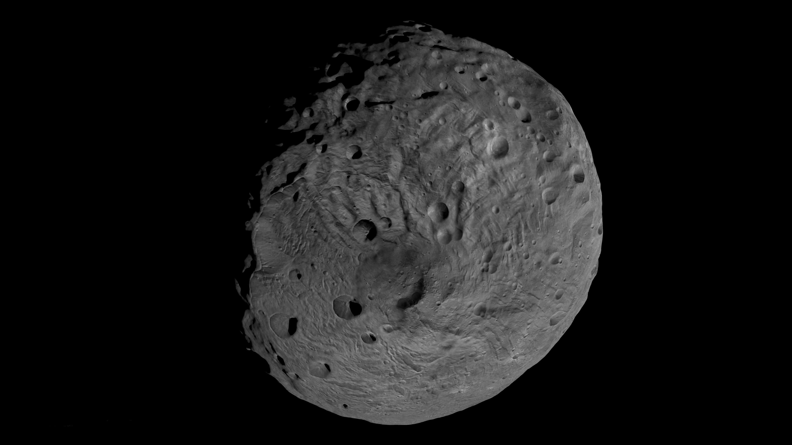

Asteroid
An asteroid is a chunk of rock and metal in outer space that is in orbit around the Sun. Asteroids vary in size from just a few feet across to hundreds of miles in diameter.
Most asteroids are not round, but are lumpy and shaped like a potato. As they orbit the Sun, they tumble and spin.
There are three main types of asteroids based on what type of elements make up the asteroid. The main types include carbon, stony, and metallic.
Carbon - Carbon asteroids are also called carbonaceous asteroids. They are made up mostly of rocks rich in the element carbon. They are very dark in color. Around 75% of all asteroids are the carbon type.
Stony - Stony asteroids are also called silicaceous asteroids. They are made up of mostly rock and some metal.
Metallic - Metallic asteroids are made up of mostly metals, primarily iron and nickel. They often have some small amounts of stone mixed in.
The majority of asteroids orbit the Sun in a ring called the asteroid belt. The asteroid belt is located between the planets Mars and Jupiter. You can think of it as a belt between the rocky planets and the gas planets. There are millions and millions of asteroids in the asteroid belt.
Asteroids may HIT the Earth (many did). These asteroids are called Near-Earth asteroids and they have orbits that cause them to pass close to the Earth. It is estimated that an asteroid larger than 10 feet across strikes the Earth around once a year. These asteroids usually explode when they hit the Earth's atmosphere and cause little damage on the Earth's surface.
